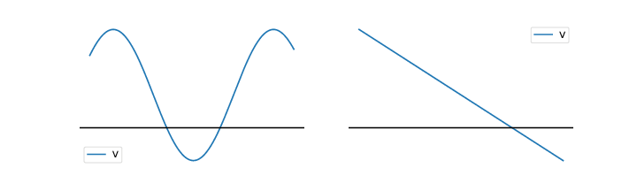
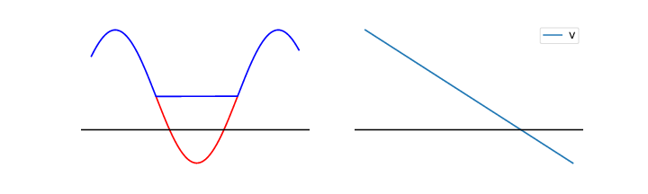

Vi kaller \( \nabla^2 \) for Laplace operatoren. La oss se litt hvilke egenskaper den har. Figuren under viser to forskjellige potensielle potensialer \( V(x) \).

a) Hvor er Laplace-operatoren anvendt på funksjonen \( d^2 V/dx^2 \) negativ, null eller positiv i de to figurene?

Rød: positiv, Blå: negativ
b) Kan noen av disse potensialene \( V(x) \) være løsninger av Laplace likning? Av Poissons likning --- og hvordan ser i så fall ladningsfordelingen ut?